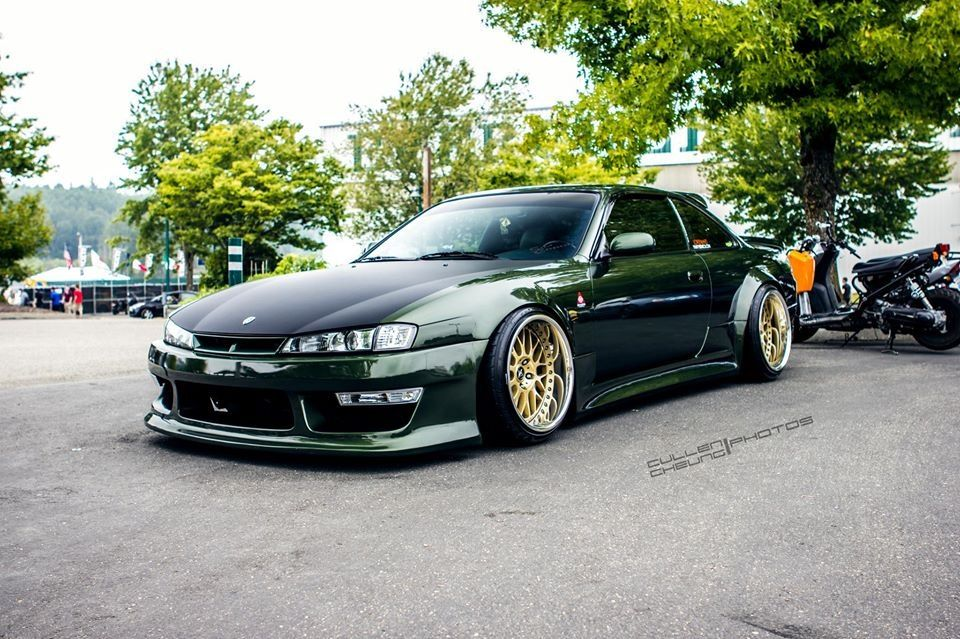

მე ეხლა იაპონურ მანქანაზე გეტყვი რაღაცეებს მაგალითად:რომელ წელს გამოვიდა მანქანა,ფასი და ასე შემდეგ, და მე ეხლა გეტყვი რა მანქანაზე დაგიწერ წლოვანებას და ასე შემდეგ,და რა მანქანა იქნება ესენი:NISSAN SILVIA S14
NISSAN SILVIA S14 KOUKI
(NISSAN SILVIA S14 KOUKI გამოუშვეს 1993-1998 ში ის იაპონიაში დაამზადეს და გამოუშვა ეს მოდელი NISSAN-მა მისი ფასი არის:19,900 დოლარიდან 25,000 დოლარამდე მერყეობს, თუ ცენტრიდან გამოიყვან ახალს უფრო ძვირი ღირს.
კიდე silvia s14-ს LYBERTI WOLKIS BODY KIT-ს უკეთბენ რადგა მანქანა უფრო ლამაზი იყოს,
silvi-ს უმეტესად დრიფტერები იყენებენ რადგან კარგად დრიფტაობს.)
წინა თაობისგან განსხვავებით, მხოლოდ ერთი S14 მოდელი, სახელწოდებით Nissan Silvia, შემოთავაზებული იყო ექსკლუზიურად იაპონური ბაზრისთვის. 180SX სახელი შეწყდა მას შემდეგ, რაც Nissan-მა გააუქმა 1.8-ლიტრიანი CA18 ძრავები S14-ისთვის. თუმცა, 180SX ჯერ კიდევ წარმოებაში იყო, მაგრამ ძველ S13 შასისზე 1996 წლამდე. S14 იყო უფრო ფართო, გრძელი და მაღალი ვიდრე S13; ამდენად, ის უფრო მძიმე იყო და Nissan-ს მოუწია ტარების სიმაღლის დაწევა გაუმჯობესებული მართვისთვის, მაგრამ მაინც იყენებდა იგივე ორმაგი ღეროს საკიდარის დაყენებას.
ძრავისა და ტრანსმისიის (4-სიჩქარიანი ავტომატური, 5-სიჩქარიანი მექანიკური) ვარიანტები დარჩა S13-ის მსგავსი, მაგრამ რამდენიმე განახლებით. მათ შორისაა უფრო დიდი ტურბო დამტენი, გაზრდილი შეკუმშვა, განახლებული ინჟექტორები და ნისანის VCT (ცვალებადი კამერის დრო) სისტემა SR20DE და SR20DET ძრავებში. მიუხედავად იმისა, რომ Nissan-მა 1987 წელს 300ZX-ში გამოქვეყნებისას მიზნად ისახავდა VCT სისტემის გაუმჯობესების მიზნით გამონაბოლქვი, მაგრამ ამან ასევე გამოიწვია სიმძლავრის მცირე ვარდნა. ის ცვლის სარქვლის დროებს მაღალ ბრუნში და აქვს ნაკლები კომპონენტი, განსხვავებით Honda-ს VTEC სისტემისგან. ეს ხდის უპრობლემოდ და აადვილებს VCT სისტემის წაშლას, რასაც Silvia-ს მფლობელების უმეტესობა აკეთებს, რადგან ეს შეიძლება იყოს პრობლემატური კომპონენტის გაუმართაობის, სიბერის და ნავთობის შიმშილის გამო, სხვა საკითხებთან ერთად.
იაპონიაში, Nissan Silvia-ს ჰქონდა იგივე მორთულობის დონე, როგორც S13 180SX და Silvia S13, ერთადერთი განსხვავება ისაა, რომ ყველა მორთვას აქვს ABS სტანდარტულად. ასევე, Aero-მ და Navan-მა შეცვალეს Diamond-ისა და Club-ის მორთულობის დონეები, როგორც უმაღლესი ხარისხის ვარიანტები. S14 Jack და Queen გაიყიდა 2.0-ლიტრიანი SR20DE-ით, ისეთი კომფორტის გარეშე, როგორიცაა ელექტრო ფანჯრები და კარები, ნისლის ნათურები და უკანა ფანჯრის საწმენდი. Nissan-მა გაყიდა მათი უმეტესობა 4-სიჩქარიანი ავტომატური ტრანსმისიით, მაგრამ 5-სიჩქარიანი მექანიკური გაკეთდა სურვილისამებრ.
1995-მდე ერთეულებს არ ჰქონდათ მძღოლის და წინა მგზავრის აირბალიშები, მაგრამ მძღოლის აირბალიშები 1995 წლის შემდეგ გახდა სტანდარტული. ყველა სხვა მაღალი დონის მორთვა, როგორიცაა წინა სპოილერი, ბლანტი LSD, ფერადი თავსაბურავი, ტყავის სავარძლები. , და პროექტორის ფარები, სურვილისამებრ იყო S14 Jack and Queen-ში.
ყველა S13 Kings და S-Types გაიყიდა 2.0-ლიტრიანი ტურბო ძრავით SR20DET უფრო სპორტული შეხებით, როგორიცაა ალუმინის დისკები, წინა და უკანა სპოილერი და უფრო დიდი ხვრელები წინა ბამპერზე. გარდა ამისა, მყიდველებს შეუძლიათ აირჩიონ ტყავის სავარძლები და ტყავით შეფუთული საჭე S-ტიპში, ფუფუნებაზე ორიენტირებული S14 Silvia. S14 Navan არ განსხვავდება S-ტიპისგან; მისი ერთადერთი განსხვავებაა მისი უნიკალური უკანა ფრთები და გვერდითი კალთები. Super HICAS არჩევითი იყო ყველა უფრო სპორტული მაღალი სპეციფიკაციის S14-ისთვის.
1994 წელს NISMO-მ (Nissan Motorsports) ააშენა 50 საიუბილეო S14-ები SR20DET-ით 270 ცხენის ძალამდე, აქედან გამომდინარე ეწოდა Silvia NISMO 270R. მარტივია განასხვავოთ ერთი საშუალო S14-ისგან წინა დამონტაჟებული ინტერკულერისა და გამწოვი ხვრელების გამო. თუ ხელახლა არ არის მოხატული, პერანგული ან შეუცვლელი, თქვენ ასევე იპოვით NISMO-ს სამკერდე ნიშანს ინტერიერში, უკანა კვარტალში და უკანა ბამპერში, R33 NISMO 400R-ის მსგავსი, რომელიც გამოვიდა ორი წლის შემდეგ.
